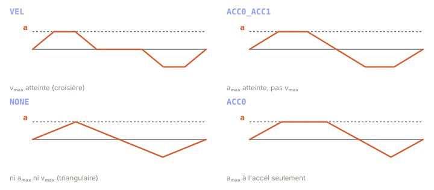

Chapitre 04
Les familles de profil
Objectifs du chapitre
- Comprendre pourquoi un profil à 7 segments prend des formes différentes selon le déplacement et les limites.
- Nommer et reconnaître les cinq familles de profil (NONE, ACC0, ACC1, ACC0_ACC1, VEL) à partir de la forme de l'accélération.
- Distinguer la famille (quelles phases existent) de la direction de jerk (UDDU / UDUD).
- Saisir la stratégie du solveur temps-optimal : énumérer, calculer en forme fermée, écarter, garder le plus court.
1. Quand des phases disparaissent
Au chapitre précédent, nous avons décomposé le profil limité en jerk en sept segments : trois pour monter en vitesse (jerk positif, accélération constante, jerk négatif), une croisière à vitesse constante, puis trois symétriques pour freiner. C'est le cas le plus riche — mais il n'apparaît que pour de grands déplacements sur des axes bien dégagés.
Dans la pratique, selon le déplacement demandé et les limites, certaines de ces sept phases ont une durée nulle. Un petit déplacement n'a jamais le temps d'atteindre vₘₐₓ : la phase de croisière s'annule. Un déplacement encore plus court n'atteint même pas aₘₐₓ : les plateaux d'accélération constante s'annulent aussi. Chaque combinaison de phases survivantes définit une famille de profil.

💡 Le nom de la famille est une liste de cases cochées : quelles saturations le profil réussit-il à atteindre ? Plus le déplacement est petit, moins on coche de cases — et plus le profil est « maigre ».
2. Les cinq familles
Regardons chaque famille par la forme de son accélération. Le raisonnement est toujours le même : de haut en bas, on retire d'abord la croisière, puis les plateaux d'accélération.
- VEL — la croisière existe : la vitesse atteint vₘₐₓ et y reste un moment. C'est le profil complet, réservé aux grands déplacements.
- ACC0_ACC1 — pas de croisière (vₘₐₓ jamais atteinte), mais les deux plateaux d'accélération saturent : aₘₐₓ à la montée et −aₘₐₓ à la descente.
- ACC0 — le plateau d'accélération sature seulement à la phase d'accélération (indice 0) ; la décélération reste triangulaire.
- ACC1 — symétrique : le plateau sature seulement à la phase de décélération (indice 1) ; la montée reste triangulaire.
- NONE — aucun plateau : l'accélération est purement triangulaire, ni aₘₐₓ ni vₘₐₓ ne sont atteints. C'est le plus petit déplacement.
Les indices 0 et 1 désignent respectivement le premier bloc (accélération) et le second bloc (décélération). Ainsi le nom encode exactement où l'accélération sature : ACC0 = bloc 0 saturé, ACC0_ACC1 = les deux, VEL = en plus, la vitesse sature.
∑ Chaque famille correspond à un système d'équations différent : dès qu'une phase disparaît, sa durée tᵢ = 0 est fixée, et il reste moins d'inconnues. Le profil complet a sept tᵢ ; NONE n'en a plus que quatre non nuls. Chaque famille se résout donc par une formule fermée qui lui est propre.
3. Deux directions de jerk : UDDU et UDUD
Tant que l'axe part du repos (v₀ = 0, a₀ = 0), l'ordre des signes de jerk est naturel : on accélère (jerk +), on relâche (jerk −), on freine (jerk −), on relâche (jerk +). Mais lorsque l'état initial n'est pas au repos — v₀ ≠ 0 ou a₀ ≠ 0 — la situation se complique.
Imaginez un axe qui file déjà trop vite vers sa cible : il faut d'abord ralentir, quitte à inverser l'accélération, avant de pouvoir se recaler. Ou une accélération initiale du « mauvais » signe qu'il faut d'abord résorber. Selon les cas, l'ordonnancement des signes de jerk à appliquer n'est pas le même — d'où deux candidats à essayer, notés par la séquence des signes :
Concrètement, ce sont deux ordres de signes possibles pour les phases de jerk. Pour un déplacement donné, l'un des deux mène à une solution valide et l'autre non (ou à une solution plus lente). Le solveur ne le sait pas d'avance : il essaie les deux.
💡 Intuition : la famille répond à « combien de phases survivent ? », la direction répond à « dans quel ordre attaquer les signes de jerk pour partir de cet état initial biscornu ? ». Deux questions indépendantes.
4. La stratégie du solveur
Comment trouver, parmi toutes ces possibilités, la trajectoire temps-optimale d'un seul axe ? Ruckig ne cherche pas « intelligemment » : il énumère. Pour un axe :
- parcourir toutes les combinaisons familles × 2 directions de jerk ;
- calculer chaque candidat en forme fermée (pas d'itération) grâce aux équations propres à sa famille ;
- écarter les candidats infaisables : ceux qui violeraient une limite (vₘₐₓ, aₘₐₓ) ou qui donnent des durées de phase négatives (physiquement impossibles) ;
- parmi les survivants, garder le profil de durée minimale.
C'est exactement ce que fait le Step 1 détaillé au chapitre suivant : la solution temps-optimale d'un axe isolé. Comme chaque candidat se calcule directement, l'énumération complète reste très rapide — parfaitement compatible avec un cycle temps réel.
⚠️ Ne confondez pas la famille (quelles phases existent : NONE, ACC0, ACC1, ACC0_ACC1, VEL) et la direction (l'ordre des signes de jerk : UDDU ou UDUD). Ce sont deux axes de recherche indépendants : le solveur explore leur produit, pas l'un ou l'autre. Un même profil est identifié par le couple (famille, direction).
5. Dans ruckig-scl
🔧 La FC ComputeProfile1Axis est le solveur temps-optimal 1-DoF : elle énumère les familles × 2 directions de jerk, calcule chacune en forme fermée, rejette les candidats infaisables, et conserve celui de durée minimale. La FC SolveDirection traite, elle, toutes les familles pour une seule direction de jerk.
Les familles portent des noms explicites : NONE, ACC0, ACC1, ACC0_ACC1, VEL ; les deux directions sont UDDU et UDUD. Pour les états initiaux pathologiques, il existe des familles de repli « two-step » — TwoStepNone, TwoStepAcc0, TwoStepVel, TwoStepAcc1Vel — qui rattrapent les cas où l'énumération standard échoue.
// SCL — schéma du solveur 1-DoF (pseudo-structure)
FOR dir := UDDU TO UDUD DO // 2 directions de jerk
#ok := "SolveDirection"(dir, ...); // essaie toutes les familles
IF #ok AND (#cand.duration < #best.duration) THEN
#best := #cand; // garde le plus court FAISABLE
END_IF;
END_FOR;Récapitulatif
- Selon le déplacement et les limites, des phases du profil à 7 segments ont une durée nulle : chaque combinaison survivante est une famille.
- Cinq familles : VEL (croisière, vₘₐₓ atteinte) → ACC0_ACC1 (deux plateaux d'accél, pas de croisière) → ACC0 / ACC1 (un seul plateau) → NONE (accél triangulaire). Le nom encode les saturations atteintes.
- Deux directions de jerk, UDDU et UDUD : ordres de signes différents, nécessaires quand l'état initial n'est pas au repos.
- Famille et direction sont des axes de recherche indépendants ; le solveur explore leur produit.
- Stratégie : énumérer familles × directions, calculer en forme fermée, écarter les infaisables et durées négatives, garder le plus court — c'est le Step 1.
- Dans
ruckig-scl:ComputeProfile1Axisénumère et sélectionne ;SolveDirectionpar direction ; familles nommées + repli « two-step ».